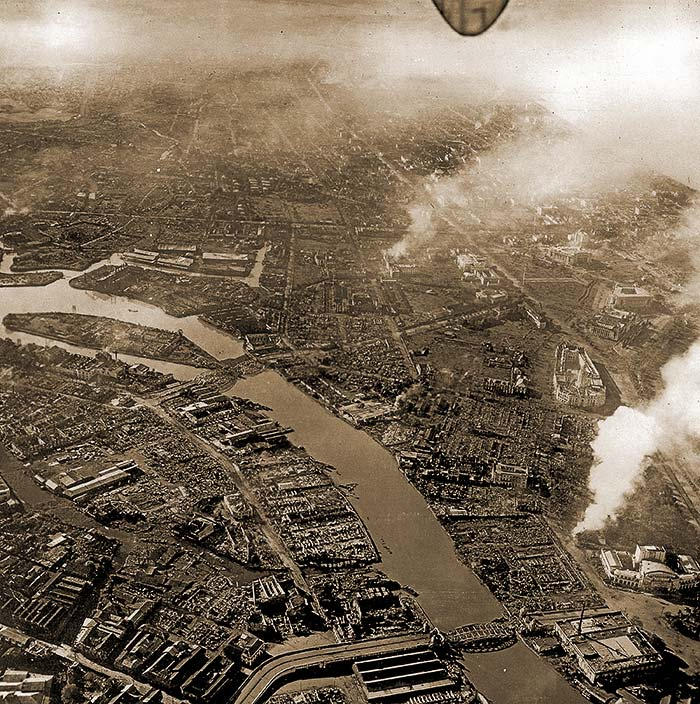

|
Pg.6/6
February 12, 1945

FLATTENED SOUTH MANILA
(Enhanced to See Through the Smoke) The Admiral and Both Syquia Apartments on Top Right Agricultural, Finance Bldgs and City Hall Mid Right Metropolitan Theater and Ice Plant Bottom Right The Nearby Quezon Bridge Swims in the Pasig River |
|
|
|
|